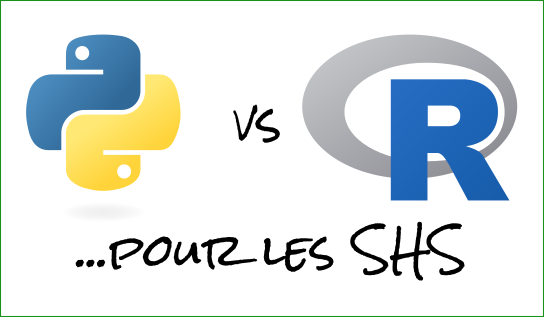

from statistics import mean, stdev
def cv(x):
moy = mean(x)
s = stdev(x)
result = s / moy
return result
print(cv([5, 6, 3, 8, 9, 12]))0.4449099179002090616 mai 2023

Apprentissage du C vers 14 ans (pas réutilisé passé 17 ans)
Licence & Master en géographie (apprentissage de R pour la statistique)
Fin de M2, “projet pro.” avec 4 camarades : coder en Python nous aurait évité beaucoup de clics répétitif pour la partie SIG.. “je devrais apprendre” - analyses multivariées en R
Un peu de chômage après un poste d’IE : j’apprends le Python
IE en sciences de l’information géographique (Python, JavaScript, un peu de R car tous les collègues utilisent R)
J’apprends le Rust sur mon temps libre
Thèse d’informatique (Web Sémantique + Géovisualisation - Java, JavaScript, Python)
IR en développement logiciel (probablement un peu de tous les langages cités précédemment)

Sourcehttps://xkcd.com/353/
Présentation des deux langages et de leur environment (Documentation, IDEs, interpréteur, etc.)
Syntaxe, sémantique et structures de données natives
Python et R pour analyser des données
Python et R pour valoriser ses traitements
Python et R pour … tout le reste
Discussion
Langage créé à la toute fin des années 80 - première version publique sortie en 1991.
Libre (régit par la Python Software Foundation License, équivalent à BSD)
Langage polyvalent, interprété, multi-paradigme (impératif, fonctionnel, OO, ..)
Typage dynamique fort (et duck typing)
Toujours en développement actif (dernière version en avril 2023)
Le projet R naît en 1993 comme un projet de recherche à l’université d’Auckland.
C’est une implémentation du langage S (développé au milieu des années 70 dans les laboratoires Bell)
Libre (licence GNU GPL)
Langage interprété, multi-paradigme (impératif, fonctionnel, OO, ..)
Typage dynamique
Toujours en développement actif (dernière version en avril 2023)
General-purpose programming language
“Jack of all trades, master of none” ?
Utilisé par Google, Facebook, Spotify, IBM, etc.
For statistical computing and graphics
“By statisticians, for statisticians”
Utilisé par Google, Facebook, Microsoft, etc.
Les deux sont des langages interprétés (langage de script), par opposition à des langages compilés (C, C++, Rust, Fortran, Pascal, etc.).
Les deux sont des langages de (très) haut-niveau, modernes et matures
Centré autour de l’interpréteur R
Un IDE avec une position quasi-hégémonique : RStudio - Plus récemment, également des utilisateurs de Visual Studio Code

Une implémentation de référence du langage Python : CPython (mais d’autres implémentations : Jython, IronPython, PyPy, etc.)
Plusieurs distributions de Python (principalement Anaconda, une distribution des langages de programmation Python et R dédiée à la science des données et à l’apprentissage automatique)
Source: anaconda.org


Les deux langages proposent d’installer des packages additionnels, et, pour chacun des deux langages, des outils ainsi qu’un index de packages installables existent.
Des différences importantes existent toutefois dans la philosophie relative à l’installation et à la publication de ces packages.
En Python, on installera ces packages en utilisant un outil en ligne de commande appelé pip, avec des commandes comme :
ou
À l’inverse, en R on installera les packages au sein de son environnement de travail actuel, depuis l’interpréteur R :

PyPI (Python Package Index) / pypi.org : le dépôt tiers officiel du langage Python, qui héberge les packages sous la forme de fichiers sources et/ou de binaires précompilés (wheel) - publication facile du moment que ce qui est versé est dans les formats attendus (mais risque de typosquatting, etc.)
453 395 packages disponibles, soit 4 451 674 versions (au 11/05/2023)
Source : https://www.tidyverse.org/
Un point fort de Python est sa documentation officielle, qui contient tout le nécessaire pour utiliser le langage de manière proactive (tutoriel, référence de l’ensemble des fonctions / objets de tous les modules de la bibliothèque standard, etc.) et qui est mise à disposition dans plusieurs langues (Anglais, Français, Espagnol, Coréen, Japonais, Chinois, etc.).
Il n’existe toutefois pas un seul standard pour consulter la documentation des différents modules additionnels Python (cf. Documentation Matplotlib, Documentation pandas).

La documentation de R, tout aussi complète qu’elle soit est (selon moi) moins user-friendly et n’est disponible qu’en anglais.
En revanche, à l’inverse de Python, la documentation de tous les packages additionnels publiés sur le CRAN est consultable dans un même formalisme (en PDF depuis le site du CRAN , ou via des sites Web comme www.rdocumentation.org).
Respecter les règles d’indentations est obligatoire en Python.
Ce n’est pas une contrainte lors d’une session de travail car les IDE guident la position du curseur.
Cette indentation a un rôle direct sur le contrôle du flux d’exécution.
Elle permet notamment d’éviter l’utilisation d’accolades (curly brackets) pour délimiter les blocs et de point-virgules pour délimiter les instructions.
Le code qui suit est volontairement incorrect mais ne génère pas d’erreur lors de l’exécution :
Une fois l’indentation corrigée…
li1 = [1, 2, 3, 4, 5, 6]
li2 = [4, 20, 31, 87, 123, 621]
# Additionnons les deux listes, éléments par éléments,
# et stockons chaque résultat dans une nouvelle liste
result = []
for item1, item2 in zip(li1, li2):
new_item = item1 + item2
result.append(new_item)
print(result)[5, 22, 34, 91, 128, 627]À l’inverse de Python, R utilise des accolades pour délimiter les blocs d’instructions et ne se soucie donc pas de l’indentation (on veillera quand même à être cohérent afin de faciliter la lecture du code)
pipe (depuis R 4.1.0 - Mai 2021) pour enchaîner les commandes, permettant ainsi de remplacer une expression telle quepar
magrittr (en 2014), il existe un opérateur pipe s’écrivant %>%, couramment utilisé dans le tidyverselibrary(dplyr)
lemur_data <- lemurs %>%
filter(taxon == "ECOL",
sex == "M",
age_category == "adult") %>%
select(c(age_at_wt_mo, weight_g)) %>%
rename(Age = age_at_wt_mo,
Weight = weight_g)Des différences existent toutefois entre |> et %>%
En Python on ne trouvera pas de nouveaux opérateurs de ce type (définis par des packages)
Les structures de données sont les éléments fondamentaux autour desquels vous construisez vos programmes. Chaque structure de données fournit une manière particulière d’organiser les données afin d’y accéder efficacement.
Python est livré avec un ensemble complet de structures de données dans sa bibliothèque standard :
dict (tableau associatif)tuple (un conteneur immuable),list (tableau dynamique mutable),array (tableau typé de base), enum (énumération), etc.Comme il s’agit d’un langage orienté-objet, il est également possible de définir des classes, permettant de facilement modéliser des catégories d’objets…
Instanciation et utilisation :
| Homogenous | Heterogenous | |
|---|---|---|
| 1d | vector, factor |
list |
| 2d | matrix |
data.frame |
| nd | array |
Utilisation
R est aussi un langage orienté-objet
Mais plusieurs APIs en compétition pour faire de la programmation orientée-objet en R (S3, R6, S4)
Surtout utilisés par les développeurs de bibliothèques et/ou les développeurs avancés en R.
L’API présentée aux utilisateurs semble plus fonctionnelle qu’orientée-objet
Ici avec le système S4…
library(methods)
setClass("Point",
slots = c(
x = "numeric",
y = "numeric"
)
)
setGeneric("x", function(pt) standardGeneric("x"))
setGeneric("x<-", function(pt, value) standardGeneric("x<-"))
setGeneric("y", function(pt) standardGeneric("y"))
setGeneric("y<-", function(pt, value) standardGeneric("y<-"))
setGeneric("distance", function(pt1, pt2) standardGeneric("distance"))
setMethod("x", "Point", function(pt) pt@x)
setMethod("y", "Point", function(pt) pt@y)
setMethod("x<-", "Point", function(pt, value) {
pt@x <- value
pt
})
setMethod("y<-", "Point", function(pt, value) {
pt@y <- value
pt
})
setMethod("distance", "Point", function(pt1, pt2) {
sqrt((pt2@x - pt1@x) ** 2 + (pt2@y - pt1@y) ** 2)
})Instanciation et utilisation :
Sémantique copy-on-modify :
my_vec <- c(1, 2, 5)
other_vec <- my_vec
# Pour l'instant 'other_vec' et 'my_vec' pointent vers le même objet..
# Modifions un élément de 'other_vec'..
other_vec[3] <- 11
# une copie de 'my_vec' a été faite, son 3 élément a été modifié puis 'other_vec' s'est mis à pointer vers cette copie
print(my_vec)[1] 1 2 5[1] 1 2 11Pour en savoir plus sur ce point Advanced R (Hadley Wickham)
Sémantique pass-by-assignment et différence entre types muables et immuables :
i = 5 # les entiers sont immuables
j = i
i = i + 1 # la valeur 5 ne peut pas être modifiée, un nouvel objet est créé ici
print(i) # 665Pour en savoir plus sur ce point : Documentation officielle - Questions fréquemment posées sur Python
Les premières différences notables entre Python et R…
Le type vector est adapté pour stocker des tableaux de valeurs (du même type) unidimensionnels et le type matrix est adapté pour stocker des tableaux de valeurs (du même type) bidimensionnels.
Les types natifs list (conteneur hétérogène) et array
(tableau typé) ne supportent les opérations vectorisées comme R.
NumPy (numpy.org).
[[1 2]
[3 4]][[ 1 4]
[ 9 16]]9Nous allons voir, dans chacun des deux langages, comment ouvrir et préparer un jeu de données pour y effectuer plusieurs traitements courants :
Le type natif data.frame.
D’autres bibliothèques (data.table, tibble, etc.)
data.framedf <- data.frame(
emp_id = c(1:5),
emp_name = c("Rick","Dan","Michelle","Ryan","Jane"),
salary = c(623.3,515.2,611.0,729.0,843.25),
start_date = as.Date(c("2012-01-01", "2013-09-23", "2014-11-15", "2014-05-11", "2015-03-27")),
stringsAsFactors = FALSE
)
print(df) emp_id emp_name salary start_date
1 1 Rick 623.30 2012-01-01
2 2 Dan 515.20 2013-09-23
3 3 Michelle 611.00 2014-11-15
4 4 Ryan 729.00 2014-05-11
5 5 Jane 843.25 2015-03-27'data.frame': 5 obs. of 4 variables:
$ emp_id : int 1 2 3 4 5
$ emp_name : chr "Rick" "Dan" "Michelle" "Ryan" ...
$ salary : num 623 515 611 729 843
$ start_date: Date, format: "2012-01-01" "2013-09-23" ...tidyverse avec tibble (a modern reimagining of the data.frame)library(tibble)
df <- tibble(
emp_id = c(1:5),
emp_name = c("Rick","Dan","Michelle","Ryan","Jane"),
salary = c(623.3,515.2,611.0,729.0,843.25),
start_date = as.Date(c("2012-01-01", "2013-09-23", "2014-11-15", "2014-05-11", "2015-03-27")),
)
print(df)# A tibble: 5 × 4
emp_id emp_name salary start_date
<int> <chr> <dbl> <date>
1 1 Rick 623. 2012-01-01
2 2 Dan 515. 2013-09-23
3 3 Michelle 611 2014-11-15
4 4 Ryan 729 2014-05-11
5 5 Jane 843. 2015-03-27tibble [5 × 4] (S3: tbl_df/tbl/data.frame)
$ emp_id : int [1:5] 1 2 3 4 5
$ emp_name : chr [1:5] "Rick" "Dan" "Michelle" "Ryan" ...
$ salary : num [1:5] 623 515 611 729 843
$ start_date: Date[1:5], format: "2012-01-01" "2013-09-23" ...
On utilisera généralement la bibliothèque Pandas (a fast, powerful, flexible and easy to use open source data analysis and manipulation tool, built on top of the Python programming language)
Tout le nécessaire pour importer des données (CSV, HDF5, XML, Excel, BD relationnelle, etc.), les manipuler (group by, sélection, filtrage, etc.), les combiner (merge, join, concatenate, compare), etc.
Permet de travailler avec des séries temporelles
import pandas as pd
data_dict = {
"emp_id": list(range(5)),
"emp_name": ["Rick", "Dan", "Michelle", "Ryan", "Jane"],
"salary": [623.3, 515.2, 611.0, 729.0, 843.25],
"start_date": pd.to_datetime(["2012-01-01", "2013-09-23", "2014-11-15", "2014-05-11", "2015-03-27"]),
}
df = pd.DataFrame(data_dict)
print(df.head()) emp_id emp_name salary start_date
0 0 Rick 623.30 2012-01-01
1 1 Dan 515.20 2013-09-23
2 2 Michelle 611.00 2014-11-15
3 3 Ryan 729.00 2014-05-11
4 4 Jane 843.25 2015-03-27emp_id int64
emp_name object
salary float64
start_date datetime64[ns]
dtype: object
Stata et SAS ont un système de valeurs manquantes étiquettées (tagged NAs)
Il est possible d’avoir un résultat similaires dans R avec le package labelled
Des conseils pour gérer les valeurs manquantes avec Pandas, mais pas de possibilité dans Pandas (à ma connaissance) pour étiquetter les valeurs manquantes comme dans Stata / SAS
| id | date | price | bedrooms | bathrooms | sqft_living | sqft_lot | floors | waterfront | view | condition | grade | sqft_above | sqft_basement | yr_built | yr_renovated | zipcode | lat | long | sqft_living15 | sqft_lot15 |
|---|---|---|---|---|---|---|---|---|---|---|---|---|---|---|---|---|---|---|---|---|
| 7129300520 | 2014-10-13 | 221900 | 3 | 1.00 | 1180 | 5650 | 1 | 0 | 0 | 3 | 7 | 1180 | 0 | 1955 | 0 | 98178 | 47.5112 | -122.257 | 1340 | 5650 |
| 6414100192 | 2014-12-09 | 538000 | 3 | 2.25 | 2570 | 7242 | 2 | 0 | 0 | 3 | 7 | 2170 | 400 | 1951 | 1991 | 98125 | 47.7210 | -122.319 | 1690 | 7639 |
| 5631500400 | 2015-02-25 | 180000 | 2 | 1.00 | 770 | 10000 | 1 | 0 | 0 | 3 | 6 | 770 | 0 | 1933 | 0 | 98028 | 47.7379 | -122.233 | 2720 | 8062 |
| 2487200875 | 2014-12-09 | 604000 | 4 | 3.00 | 1960 | 5000 | 1 | 0 | 0 | 5 | 7 | 1050 | 910 | 1965 | 0 | 98136 | 47.5208 | -122.393 | 1360 | 5000 |
| 1954400510 | 2015-02-18 | 510000 | 3 | 2.00 | 1680 | 8080 | 1 | 0 | 0 | 3 | 8 | 1680 | 0 | 1987 | 0 | 98074 | 47.6168 | -122.045 | 1800 | 7503 |
| 7237550310 | 2014-05-12 | 1225000 | 4 | 4.50 | 5420 | 101930 | 1 | 0 | 0 | 3 | 11 | 3890 | 1530 | 2001 | 0 | 98053 | 47.6561 | -122.005 | 4760 | 101930 |
Source : House Sales in King County, USA
Statsmodels (Anova, régression linéaire, régression logistique, etc.)
Scikit-learn, développée par des membres de l’INRIA
Scikit-learn (Classification, Regression, Clustering, Dimensionality reduction, Model selection, Preprocessing)
TensorFlow (“Créez des modèles de machine learning pour la production avec TensorFlow”, développé par Google)
Keras (“Deep learning for humans” - pour interagir avec des algorithmes de réseaux de neurones profonds et d’apprentissage automatique, dont ceux de TensorFlow)
PyTorch (An open source machine learning framework that accelerates the path from research prototyping to production deployment)

mlr3 (“Efficient, object-oriented programming on the building blocks of machine learning”)
nnet (fournis avec R base)
TensorFlow for R (mais nécessite une installation Python avec TensorFlow)
Keras, Torch
En savoir plus sur le site du CRAN : https://cran.r-project.org/web/views/MachineLearning.html

Utilisation de matplotlib (et éventuellement de bibliothèques comme seaborn, basé sur matplotlib, qui offrent une API de plus haut-niveau pour faire facilement certains types de graphiques), principalement pour des graphiques statiques (images).
Bokeh principalement pour des graphiques interactifs.
Même si plusieurs solutions concurrentes existent dans chacun des 2 langages, les bibliothèques les plus utilisés dans les 2 langages suivent la même logique :
utilisation sous-jacente de GDAL/OGR pour les I/O
utilisation sous-jacente de GEOS pour manipuler les géométries (prédicats spatiaux, etc.)
utilisation sous-jacente de PROJ pour manipuler les systèmes de coordonnée de référence
étendre un type “data frame” pour permettre la présence d’une colonne de géométries et présence de traitement appropriés
data.frame de R base ou le type tibbleDataFrame de pandas en GeoDataFramePour récupérer des données sous forme de triplets RDF… mais également pour modélisation ontologique
Différentes initiatives en R (rdflib, ontologyPlot, etc.), moins abouties à mon gout
Le langage Java reste probablement le langage de choix (Jena, OWLAPI, RDF4J, différents moteurs d’inférence, etc.)
| Domaine | Python | R |
|---|---|---|
| Manipulation de données | Pandas, polars | R base, tibble, data.table |
| Statistique | Statsmodels, Scipy | R base, stats, FactoMineR |
| Apprentissage automatique ou profond | Scikit-learn, Tensorflow, PyTorch | mlr3, nnet, Tensorflow |
| Visualisation | Matplotlib, Seaborn, Bokeh, Plotly | R base, ggplot2, Bokeh, Plotly |
| Géospatial | GeoPandas, Shapely, Rasterio, PySal | sf, terra, spdep, gstat |
| Web scraping | BeautifoulSoup4, Selenium, Scrapy | Rselenium, Rvest |
| Traitement automatisé de la langue | Spacy, NLTK | Spacyr, NLP, Tidytext |
| Programmation lettrée | Jupyter notebook, Quarto | R Markdown, Quarto |
Deux écosystèmes très actifs pour être à jour (ou à la pointe) dans les différents domaines scientifiques
De nombreuses bibliothèques sont disponibles dans les deux langages (Selenium, Bokeh, Plotly, Tesseract, ImageMagik, Spacy, etc.)
La possibilité d’utiliser :
Interopérabilité avec d’autres langages
Plusieurs manières de valoriser les scripts écrits dans les deux langages ainsi que les résultats obtenus existent :
Les deux langages ont en commun une partie de l’écosystème :
R markdown (pour R mais permet d’utiliser Python)
Jupyter notebook (pour Python mais permet d’utiliser R)
Quarto (permet d’utiliser R et Python - utilisé pour cette présentation)

Quarto : “An open-source scientific and technical publishing system” (R, Python, Julia, Observable JavaScript)
Principe de la programmation lettrée (litterate programming)
Pour préparer différents types de documents (page HTML, slides, PDF, document Word, etc.)
Load the data from the #TidyTuesday repository:
Filter the data to only look at adult male Collared Brown Lemurs, and extract only the age and weight columns:
| Age | Weight |
|---|---|
| 129.90 | 2805 |
| 132.10 | 3001 |
| 140.32 | 2429 |
| 157.94 | 2597 |
| 164.58 | 2497 |
| 184.18 | 2225 |
Fit a linear model using Python:
library(reticulate)
library(ggplot2)
lemur_residuals <- py$lemur_data_py
ggplot(data = lemur_residuals,
mapping = aes(x = Predicted,
y = Residuals)) +
geom_point(colour = "#2F4F4F") +
geom_hline(yintercept = 0,
colour = "red") +
theme(panel.background = element_rect(fill = "#eaf2f2",
colour = "#eaf2f2"),
plot.background = element_rect(fill = "#eaf2f2",
colour = "#eaf2f2"))Python : Bokeh (et Bokeh Server), Dash
Exemple d’application Shiny (R) vs. Exemple d’application Bokeh Server vs. Exemple d’application Dash
Python est un langage de premier choix pour le développement Web côté serveur (sites Web dynamiques, API REST, etc.): Flask, Django, FastAPI, etc., etc. + template engine (Jinja 2) + connexion à bases de données + etc. etc.
Ces frameworks tirent profit de la syntaxe épurée du Python et de ses capacités en termes de metaprogramming pour permettre d’écrire des serveurs Web personnalisés
Déployment facile.
Exemple en SHS : Magrit
Exemple en SHS : Ruitor (par Mattia Bunel dans le cadre de sa thèse : programmation orienté ontologie, manipulation de rasters + API Web)
from typing import Union
from fastapi import FastAPI
from pydantic import BaseModel
app = FastAPI()
class Item(BaseModel):
name: str
price: float
is_offer: Union[bool, None] = None
@app.get("/")
def read_root():
return {"Hello": "World"}
@app.get("/items/{item_id}")
def read_item(item_id: int, q: Union[str, None] = None):
return {"item_id": item_id, "q": q}
@app.put("/items/{item_id}")
def update_item(item_id: int, item: Item):
return {"item_name": item.name, "item_id": item_id}PyQt / PySide : pour utiliser la bibliothèque Qt pour développer des applications de bureau
Tkinter, PySimpleGUI (exemple)
Exemple en SHS : Besoin d’une petite interface pour faciliter l’import des données (avant un traitement effectué en R ou en Python) pour que les chercheurs d’un projet qui n’utilisent pas la programmation puissent effectuer eux-mêmes leurs analyses…
Même en SHS certains projets peuvent déboucher sur le développement d’une application mobile.
Ou alors pour vendre une application mobile sur le Google Play Store et gagner des millions…
En Python :
Quand on prend gout à la programmation, il n’est pas rare de vouloir automatiser différents types de tâches (opération de maintenance sur une machine perso. ou sur un serveur, récupération de données du Web, etc.) ou de voir plus loin que l’exécution de scripts dédiés à l’analyse de données…
Python est le langage de choix dans l’application SIG de bureau QGIS :
Blender : un logiciel libre de modélisation, d’animation par ordinateur et de rendu en 3D
Intègre une console Python, permet d’interagir avec de nombreux aspects de Blender dont notamment l’animation, le rendu, l’import et l’export, la création d’objet et l’éxécution automatisée de tâches répétitives
Pour en savoir plus: https://docs.blender.org/api/current/info_overview.html
R a plus de fonctions natives (et probablement de meilleurs packages) dédiés à la statistique
De manière générale, R est excellent pour les statistiques (ça ne veut pas dire que Python est mauvais pour autant ;))
L’écosystème Python est toutefois très bien équipé pour la science des données
Il est généralement plus simple de faire des tâches non-statistiques en Python
Voir https://www.tiobe.com/tiobe-index/ / https://pypl.github.io/PYPL.html
Marché de l’emploi (en général, et spécifiquement dans votre communauté)
| Item comparé | Python | R |
|---|---|---|
| Documentation de base | Win | |
| Élégance / syntaxe | Win | |
| OOP, metaprogramming | Tie | Tie |
| Packages additionnels | Tie | Tie |
| Documentation packages additionnels | Win | |
| Prix du ticket d’entrée / simplicité de l’écosystème | Win | |
| Collecte de données, Web scraping, etc. | Win | |
| Statistique | Win | |
| Visualisation | Win | |
| Apprentissage automatique | Win | |
| Géospatial | Tie | Tie |
| Traitement automatisé de la langue | Win | |
| Programmation lettrée | Tie | Tie |
| Web / Mobile / Programmation embarquée | Win |
Python vs. R, lequel apprendre… en premier ?
Pourquoi connaitre les 2 ?
Appendre à transformer ses idées en logique “informatique” plutôt que de se formaliser sur (ou se fâcher avec) la syntaxe de l’un ou l’autre des langages
Utiliser le langage qui vous hype le plus… prendre du plaisir et s’amuser en écrivant du code informatique est important !
16 mai 2023
Matthieu Viry - matthieu.viry@cnrs.fr